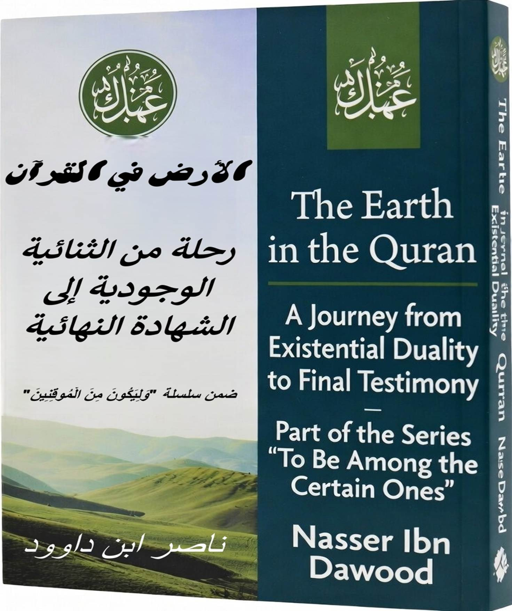

This English edition is a condensed conceptual adaptation. It presents the core ideas and philosophical framework in accessible language, but does not include all the detailed discussions, linguistic analyses, and expanded references found in the original Arabic work.
For researchers and serious readers: We recommend downloading the complete Arabic version and using translation tools for a comprehensive understanding. The Arabic version includes:
* Complete linguistic analysis of Quranic terms
* Detailed exegesis of all relevant verses
* Expanded discussions and references
* Comprehensive bibliography and footnotes
---
In the Quran, the "Earth" is more than a physical planet—it's a profound symbol shaping human existence. This book explores it as a dynamic framework, pairing it with the "Heavens" to form an existential duality. We move from spatial concepts to deeper meanings: the Earth as a field of testing, responsibility, and renewal. Drawing from Quranic verses, we link it to worship, repentance, and daily life, ending with its role as a final witness on Judgment Day. Aimed at Western readers, this adaptation highlights philosophical insights, encouraging reflection on humanity's place in the cosmos without imposing scientific or dogmatic views.
#### The Heavens and Earth: From Spatial Duality to Existential Structure
The Quran doesn't treat the Heavens and Earth as mere locations but as a symbolic system guiding human understanding. The Heavens represent absolute values, stability, and divine commands—where revelation descends. The Earth is the realm of action, where values become behavior and knowledge turns into duty. Guidance lies in their connection: what's from the Heavens has no meaning without earthly application, and earthly acts lack value without heavenly standards.
#### The Earth: Arena of Testing, Not Condemnation
Traditional views see the Earth as punishment for the Fall, but a structural reading reveals it as a space for stewardship and practical learning. "I will place upon the Earth a successor" (Quran 2:30) means entrusting humans with managing actions according to heavenly values. The Earth isn't a site of downfall but truth—revealing who truly lives by principles versus mere claims. Warnings against corruption on Earth highlight deviation from heavenly norms, making the Earth a mirror, not the cause.
#### Humanity: Bridge Between Heavens and Earth
Humans aren't divided beings but existential bridges:
- Heart as Heavens: Receiving commands, revelation, meaning.
- Body as Earth: Practicing, executing, embodying.
Separation breeds distorted faith: knowledge without impact or behavior without standards. Harmony achieves true servitude: alignment of belief and action. Humanity's crisis stems from severed ties between inner Heavens and outer Earth.
#### The Body in the Quran: Raw Material and Silent Text
The Quran distinguishes "body" (often lifeless or disconnected) from "form" (dynamic interaction). "Body" in temptation contexts refers to matter detached from meaning: knowledge without understanding, form without spirit. This intersects with the Earth's meaning when emptied of Heavens: Earth without values, body without soul, text without method.
#### The Body on Solomon's Throne: Trial of Text Without Method
The story of a "body" thrown on Solomon's throne symbolizes the trial of knowledge detached from method. The throne represents wisdom and power; the body, inert information or unguided force. The trial isn't loss of kingdom but facing raw matter: managed by heavenly method or becoming a burden? This recurs in every era: texts, sciences, technologies, powers—all "bodies" revived by values' spirit.
#### From Heavens to Earth: Quranic Guidance Criterion
Guidance isn't knowledge accumulation but realized movement:
- Starts in Heavens: Standard, balance, command.
- Ends on Earth: Action, behavior, responsibility.
Faith measures by fruits, not words. Earth is faith's lab, trial's stage, truth's scale. The Quran calls not to flee Earth but purify it with values, not despise the body but enliven it with method.
**Conclusion to Part 1**: Earth isn't Heaven's opposite but its practical extension. Civilizational deviation begins when values detach from reality or reality burdens without values.
#### Earth as Sign: From Physical Creation to Existential Meaning
The Quran describes Earth's creation amid cosmic signs, shifting from material to functional. "God who created the Heavens and Earth, sent down water from the sky, producing fruits as provision" (Quran 14:32). Earth isn't just a planet but a system revealing the Creator's power, obliging reflection. Creation isn't past event but ongoing process, reminding humans their existence hangs between divine power and earthly responsibility.
#### Earth as Cradle: Stability and Security as Prelude to Duty
Earth is "cradle," "bed," "carpet": "Who made the Earth a resting place for you and carved paths in it" (Quran 20:53). This isn't absolute comfort but temporary stability enabling duty. Like a child's cradle leads to responsibility, Earth's security demands ethical accountability—gratitude or ingratitude.
#### Earth and Sustenance: Divine Gift and Human Effort
Earth ties to sustenance organically: "We spread out the Earth and placed firm mountains, growing every delightful pair" (Quran 50:7). Provision requires effort: "He made the Earth tame for you—walk its shoulders and eat His provision" (Quran 67:15). Balance: sustenance from God, acquisition from humans. Reducing it to material gain corrupts Earth; to passivity wastes harnessing promise.
#### Corruption on Earth: Detachment from Heavenly Balance
Corruption is grave Quranic charge: "When told 'Don't corrupt the Earth,' they say 'We are reformers'" (Quran 2:11). It's any act deviating from heavenly balance—in economy, politics, science, relations. Earth isn't corrupt inherently; human acts corrupt it. Reform starts reconnecting Heavens to Earth within humans.
#### Earth on Resurrection Day: From Trial Arena to Account Witness
Earth shifts from stage to witness: "That Day it will declare its
news" (Quran 99:4). Every event on it recorded in its structure and
humans'. Earth doesn't lie, mirroring human acts faithfully. This reveals Earth
was never mere backdrop but trial partner.
#### Construction vs. Destruction: Ongoing Mission
Quran links stewardship to construction warning: "He produced you from Earth and settled you in it" (Quran 11:61). Settlement isn't exploitation but value-based development. Each generation inherits Earth, asked: Did you add good or diminish it?
**Partial Conclusion**: Earth isn't mere dwelling but existential partner: cradle granting security, lab revealing truth, witness on Judgment Day. Proper relation starts thanking its Creator, then developing it pleasingly. Every civilizational or environmental flaw today is new disconnection between Heavens and Earth in modern humans.
#### Earth and Earthquakes: Revealer of Inner Burdens
"When Earth is shaken with its [final] quake, and Earth discharges its burdens" (Quran 99:1-2). Earthquake isn't random punishment but organized revelation of deposited acts—good or evil. Symbolically, external quake mirrors inner shakeup when rigid assumptions collapse. Earth doesn't quake alone but by divine command, purging and revealing. Sole remedy: continual reflection and good acts, before sudden quake arrives.
#### Earth, Death, Resurrection: Grave and Revival as Transitional Phases
"From it We created you, into it We return you, from it We bring you forth again" (Quran 20:55). Cycle complete: creation from Earth, return (death), extraction (resurrection). Earth isn't end but transitional stage: cradle of creation, tight embrace in grave teaching and accounting, new birth in resurrection. Earth preserves effects, witnesses on limited Day.
#### Earth in Quranic Stories: Lessons from Past Nations
Quran uses Earth as stage for past nations' tales, not mere history but teaching it's witness and teacher.
- Noah's people: Earth floods then yields survivors, teaching salvation links to Heavens amid Earth.
- Hud's (Ad): Wind destroys, Earth preserves ruins as lesson: Arrogance destroys strongest structures.
- Saleh's (Thamud): Earth quakes and swallows, preserving she-camel sign and empty homes as reminder.
- Lot's people: Earth overturned, teaching moral corruption overturns cosmic order.
- Pharaoh: Earth (sea) swallows, casts body as sign.
In every tale, Earth isn't passive backdrop but active: bears traces, witnesses corruption or righteousness, yields lessons for walkers in it: "Travel the Earth and see previous deniers' end" (Quran 6:11).
**Conclusion to Part 3**: Earth in Quran isn't dead soil but living entity: quakes to reveal, swallows to return, preserves to witness. Mirror of humans, lab, witness. Proper relation isn't exploitation or flight but gratitude, development, purification. Who reformed in it reformed for him when it declares news; who corrupted, it narrows on him when discharging burdens.
#### Earth and Heavens in Supplication: Axis of Refuge and Response
"Our Lord, give us good in this world and good in the Hereafter, save us from Fire's torment" (Quran 2:201). In Quranic supplication, Heavens and Earth are integrated axes for refuge. Supplication bridges: starts from earthly need, ascends to Heavens, returns with response. Adam's supplication after descent: confession of earthly weakness, seeking heavenly mercy.
#### Earth as Mother in Quranic View: Mercy, Embrace, Return
"From it We created you, into it We return you, from it We bring you forth again" (Quran 20:55). Quran likens Earth to mother without explicit "mother" word but through embrace and care connotations.
- Creation from it: Like fetus from mother's elements.
- Embrace and care: Spread, furnished, fruited as mother spreads and feeds.
- Return to it: Death as return to mother's lap, grave tight hug teaching.
- Extraction from it: Resurrection as new birth from Earth's womb.
Earth merciful mother to believer, harsh to disbeliever: embraces righteous mercifully, presses wrongdoers painfully. View teaches filial piety to Earth: no corruption, but development and gratitude.
**Conclusion to Part 4**: These contexts complete our Earth journey in Quran: in supplication bridge to Heavens, as mother embrace carrying creation, death, resurrection. Earth isn't enemy but mother we return to, resurrect from. Proper relation isn't exploitation or flight but gratitude and development. Who did good to his Earth, it did good to him on Resurrection Day; who wronged it, its embrace narrowed on him.
#### Heavens and Earth in Prayer: Movement from Standing to Prostration
"Prostrate and draw near" (Quran 96:19). Prayer in Quranic view isn't mere ritual but full existential movement linking human to Heavens and Earth. Stands on Earth, raises hands toward Heavens, bows, prostrates on Earth—prayer thus living bridge between dimensions, achieving harmony we discussed: heavenly command activated on Earth.
#### Prostration on Earth: Peak Closeness to Heavens
Prophet ﷺ said: "Closest servant to Lord is in prostration" (Muslim). How closest to God—above Heavens—in moment most attached to Earth? Here Quranic depth: Heavens reached not by physical ascent but earthly submission. Prostration on Earth full declaration human dust, all elevation from Heavens. Emptying self of earthly pride fills heart with heavenly light.
#### Raising Hands in Supplication: Bridge of Response Between Earth and Heavens
In prayer, especially prostration or after testimony, raising hands recommended. Movement embodies duality clearly: human on Earth raises palms toward Heavens, confessing need earthly, gift heavenly. "Call upon Me; I respond" (Quran 40:60)—supplication in prayer highest link between Earth and Heavens, emerging from submissive heart on Earth, ascending pure to Heavens.
**Partial Conclusion**: Prayer in Quran isn't detachment from Earth toward Heavens nor drowning in Earth away from Heavens, but daily moment restoring bridge between. Every cycle reminds human successor on Earth but servant to Heavens, greatest spiritual elevation in lowest physical moment: prostration on dust.
#### Heavens and Earth in Fasting: Earthly Abstinence for Heavenly Reception
"O believers, fasting prescribed for you as for those before, perhaps you attain piety" (Quran 2:183). Fasting and pilgrimage—with minor pilgrimage—embody Quranic duality most deeply. Both start with earthly movement (abstinence or travel), reach heavenly goal (piety or forgiveness). Human leaves Earth's desires for Heavens' light, or homes for heavenly acceptance.
#### Heavens and Earth in Pilgrimage and Minor Pilgrimage: Earthly Journey for Heavenly Acceptance
Pilgrimage and minor pilgrimage earthly journey par excellence: travel, circumambulation, striving, Arafat stand, stoning. Yet crowned with heavenly acceptance: "Whoever intends deviation or wrongdoing therein, We make him taste painful punishment" (Quran 22:25), and "Accepted pilgrimage's reward is Paradise" (Hadith).
**Conclusion to Part 6**: In fasting and pilgrimage, duality shines brightest: earthly abstinence or travel isn't end but means for heavenly mercy. Fasting empties self daily to fill with piety; pilgrimage empties once lifelong to rebuild with forgiveness. Every Quranic worship teaches elevation comes not fleeing Earth but purifying it with heavenly command.
### Part 7: Duality in Almsgiving and Self-Struggle
#### Heavens and Earth in Almsgiving: Purifying Earthly Wealth with Heavenly Blessing
"Take from their wealth charity purifying and sanctifying them; pray for them—your prayer tranquillity for them" (Quran 9:103). Almsgiving and self-struggle internal worships first, yet embody Quranic duality: first purifies earthly wealth with heavenly blessing; second battles earthly self for heavenly victory. Both teach elevation by sanctifying Earth with heavenly command.
#### Heavens and Earth in Self-Struggle: Earthly Self-Battle for Heavenly Victory
Greater struggle—self-struggle—is inner war against whims and desires
earthly: food, wealth, fame, comfort. Prophet ﷺ said
returning from battle: "We returned from lesser to greater struggle."
**Conclusion to Part 7**: In almsgiving and self-struggle, duality completes: almsgiving purifies outer Earth (wealth) to receive heavenly blessing; self-struggle purifies inner Earth (self) to receive heavenly guidance. Both teach key is sanctifying Earth with heavenly reception.
#### New Understanding of Islam's Pillars: From Rigid Ritual to Renewed Life Method
Over centuries, Islam's five pillars formed Muslim identity's backbone. But amid life's acceleration and pressures, many face existential challenge: How can these pillars be more than performed rituals, becoming living, effective method elevating individual and society?
#### Testimony and Earth: Existential Commitment
Testimonies—"No god but God, Muhammad God's Messenger"—declare cosmic commitment obliging humans reorder earthly life wholly on monotheism.
#### Prayer and Earth: Comprehensive Connection
As before, prayer isn't motions but comprehensive connection: spiritual (servant to Lord), social (acts strengthening human ties), civilizational (establishing justice and high values in society).
#### Fasting and Earth: Taming Self and Renewed Search
Fasting essentially "withholding" and "training." Not mere hunger/thirst but method for control and elevation.
#### Almsgiving and Earth: Purifying Life
Almsgiving, from root "z k w" (growth, purity, improvement), not mere act but ongoing process purifying and developing life.
#### Pilgrimage and Earth: Pursuit Toward Goal
Pilgrimage, from root meaning intent and purpose, represents humanity's great journey toward lofty goals.
**Conclusion**: This new understanding restores pillars' spirit. Links apparent performance to inner purpose, making Islam breathe with every life movement.
#### Testimonies and Repentance: Monotheism Start, Return Continuation
Testimonies announce entry into Islam; repentance renews it daily.
#### Repentance and Fitrah: Return to Pure Origin
Repentance and fitrah intertwined: repentance practical return to fitrah, fitrah destination guiding repentance.
#### Adam's Repentance Story: Descent to Earth and Return to Fitrah
Adam's story full existential model: creation from Earth, slip in Paradise, descent, repentance on Earth, stewardship.
**Conclusion**: Repentance and fitrah salvation key in Earth: fitrah pure origin created upon, repentance path returning after slip.
#### Earth and Remembrance: Polish for Heart and Earth Cleansing
Remembrance—God's remembrance—true polish for this inner and outer Earth.
#### Earth and Supplication: Lift from It to Heavens
Supplication true lift from Earth to Heavens: raising heart, hands, voice; raising earthly need to boundless giver.
#### Earth and Patience: Steadfastness Upon It in Trial Field
Earth not cradle absolute comfort but trial field continuous: sustenance promise, limited trial, corruption surrounds, enemy lurks. Patience here not passive endurance but positive steadfastness upon Earth.
#### Earth and Gratitude: Watering Its Blessings
Earth filled God's blessings: rain, crops, sustenance, security. Gratitude true watering these blessings.
#### Earth and Good Deeds: Developing It
Good deeds true development: revives dead Earth, grows blessings, reforms corruption.
**Conclusion**: Good deeds true development for Earth: develops heart with piety, reality with justice and mercy.
#### Earth Witnesses: From Silence to Final Speech
Quran describes Earth on Judgment Day shaken, discharging burdens, then declaring news.
#### Earth Transformation on Judgment Day: From Cradle to Witness
Judgment Day transforms Earth's role from arena to witness.
#### Link to Fitrah, Repentance, Deeds: Final Testimony on Truth
Earth on Judgment Day witnesses preservation of fitrah, repentance acceptance, good deeds' fruit.
#### Earth on Judgment Day: Final Lesson in Stewardship
Judgment Day climax highlighting Earth's role as ultimate witness.
**Book Conclusion**: With this part, we conclude our series "Earth in the Quran": began with duality with Heavens as existential structure, through role as sign, trial arena, witness, linking to worships and pillars as renewed life method, ending with ultimate testimony on Judgment Day. Earth isn't Heavens' opposite but practical extension: arena tested in, embrace carrying deeds, witness declaring news. Who did good developing, purifying, thanking, did good witnessing for him; who did wrong, wronged witnessing against him. Quran calls living in Earth as successors, developing it with good deeds, patient upon it, thankful for blessings, supplicating in it, remembering God upon it, until discharging burdens witnesses for us not against us.
**Keywords**: Earth, Quran, Heaven, Caliphate, Earthquakes, Death, Resurrection, Quranic Stories, Supplication, Prayer, Fasting, Pilgrimage, Almsgiving, Self-Jihad, Testimony, Repentance, Fitrah, Remembrance, Patience, Gratitude, Good Deeds, Day of Judgment, Existential Duality, Final Testimony.
---
(Note: This condensed adaptation is approximately 30 pages if formatted in standard book layout with 250-300 words per page. For full depth, refer to the original Arabic.)
Towards a Liberative, Non-Institutional Quranic Contemplation
The Project’s Vision The Nasser Ibn Dawood Digital Library is an open-knowledge initiative dedicated to re-centralizing the Holy Quran as the sole, definitive Divine text. It aims to liberate Quranic contemplation (Tadabbur) from sectarian guardianship and institutional constraints by treating the "Quranic Tongue" (Al-Lisan al-Qur’ani) as a self-contained, autonomous semantic system.
Methodological Foundations The project is built on the firm conviction that the Prophet Muhammad (PBUH) delivered a single, preserved, and written message. The historical expansion of speculative narratives (Hadith) has led to the institutionalization of religion and the fragmentation of the Quranic discourse. Consequently, we maintain that true Prophetic tradition (Sunnah) is only that which aligns structurally and semantically with the Quran, never that which contradicts or competes with its authority.
The Engineer’s Approach: Geometric Deconstruction Utilizing my background as a Civil Engineer, I apply a method of Geometric Deconstruction to the text. The Quran is read as an integrated system where:
Author’s Statement on Methodology “I, Nasser Ibn Dawood, do not belong to any legal school (Madhab), nor am I beholden to any religious institution or historical movement. This library is the fruit of a journey toward intellectual liberation, seeking to return to the authentic Divine discourse, away from the parallel religious narratives accumulated over centuries.”
Key Pillars of the Library:
About the Author Nasser Ibn Dawood
Guiding Philosophical Principles:
Global Access Policy Knowledge is a universal right. All books in this library are available for free in multiple formats (PDF, HTML, DOCX, TXT). As of early 2026, the library hosts 68 volumes (34 in Arabic and 34 in English), optimized for AI-assisted research and digital archiving.
Official Platforms: